Amplificadores y Dispositivos Activos
De lo eléctrico a lo electrónico
Este tercer volumen de la serie de libros.Lecciones en circuitos eléctricosse aparta de los dos primeros en que la transición entreeléctricocircuitos yelectrónicoLos circuitos se cruzan formalmente. Los circuitos eléctricos son conexiones de cables conductores y otros dispositivos mediante los cuales se produce el flujo uniforme de electrones. Los circuitos electrónicos añaden una nueva dimensión a los circuitos eléctricos en el sentido de que algunos medios decontrolSe ejerce sobre el flujo de electrones por otra señal eléctrica, ya sea un voltaje o una corriente.
En sí mismo, el control del flujo de electrones no es nada nuevo para el estudiante de circuitos eléctricos. Los interruptores controlan el flujo de electrones, al igual que los potenciómetros, especialmente cuando se conectan como resistencias variables (reostatos). Ni el interruptor ni el potenciómetro deberían ser nuevos para su experiencia en este punto de su estudio. El umbral que marca la transición de lo eléctrico a lo electrónico, entonces, está definido porhowel flujo de electrones está controlado en lugar de si existe o no alguna forma de control en un circuito. Los interruptores y reóstatos controlan el flujo de electrones según el posicionamiento de un dispositivo mecánico, que es accionado por alguna fuerza física externa al circuito. En electrónica, sin embargo, se trata de dispositivos especiales capaces de controlar el flujo de electrones según otro flujo de electrones o mediante la aplicación de una tensión estática. En otras palabras, en un circuito electrónico,La electricidad es capaz de controlar la electricidad..
El precursor histórico de la era de la electrónica moderna fue inventado por Thomas Edison en 1880 mientras desarrollaba la lámpara incandescente eléctrica. Edison descubrió que una pequeña corriente pasaba desde el filamento calentado de la lámpara a una placa metálica montada dentro de la envoltura de vacío. (Cifra below(a)) Hoy esto se conoce como el “efecto Edison”. Tenga en cuenta que la batería sólo es necesaria para calentar el filamento. Los electrones seguirían fluyendo si se utilizara una fuente de calor no eléctrica.
{kind=link}
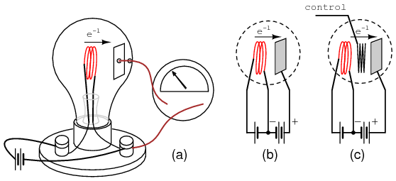
(a) Efecto Edison, (b) Válvula Fleming o diodo de vacío, (c) Amplificador de válvulas de vacío con triodo audion DeForest.
En 1904, el asesor de Marconi Wireless Company, John Flemming, descubrió que una corriente aplicada externamente (batería de placas) solo pasaba en una dirección desde el filamento a la placa (Figura above(b)), pero no en la dirección inversa (no se muestra).Este invento fue el diodo de vacío, utilizado para convertir corrientes alternas en CC. La adición de un tercer electrodo por Lee DeForest (Figura above(c)) permitió que una pequeña señal controlara el flujo de electrones más grande desde el filamento a la placa.
Históricamente, la era de la electrónica comenzó con la invención deltubo de audio, un dispositivo que controla el flujo de una corriente de electrones a través del vacío mediante la aplicación de un pequeño voltaje entre dos estructuras metálicas dentro del tubo. Un resumen más detallado de los llamadostubo de electrones or tubo vacíoLa tecnología está disponible en el último capítulo de este volumen para aquellos que estén interesados.
La tecnología electrónica experimentó una revolución en 1948 con la invención deltransistor. Este pequeño dispositivo logró aproximadamente el mismo efecto que el tubo Audion, pero en una cantidad de espacio mucho menor y con menos material. Los transistores controlan el flujo de electrones a través de un sólido.semiconductorsustancias en lugar de a través del vacío, por lo que la tecnología de transistores a menudo se denominaestado sólidoelectrónica.
Active versus passive devices
An activodispositivo es cualquier tipo de componente de circuito con la capacidad de controlar eléctricamente el flujo de electrones (electricidad que controla la electricidad). Para que un circuito se llame correctamenteelectrónico, debe contener al menos un dispositivo activo. Los componentes incapaces de controlar la corriente mediante otra señal eléctrica se denominanpasivodispositivos. Las resistencias, los condensadores, los inductores, los transformadores e incluso los diodos se consideran dispositivos pasivos. Los dispositivos activos incluyen, entre otros, tubos de vacío, transistores, rectificadores controlados por silicio (SCR) y TRIAC. Se podría argumentar que el reactor saturable se define como un dispositivo activo, ya que es capaz de controlar una corriente CA con una corriente CC, pero nunca escuché que se haga referencia a él como tal. El funcionamiento de cada uno de estos dispositivos activos se explorará en capítulos posteriores de este volumen.
Todos los dispositivos activos controlan el flujo de electrones a través de ellos. Algunos dispositivos activos permiten que un voltaje controle esta corriente, mientras que otros dispositivos activos permiten que otra corriente haga el trabajo. Los dispositivos que utilizan un voltaje estático como señal de control se denominan, como es lógico,controlado por voltajedispositivos. Los dispositivos que funcionan según el principio de una corriente que controla otra corriente se conocen comocontrolado por corrientedispositivos. Para que conste, los tubos de vacío son dispositivos controlados por voltaje, mientras que los transistores se fabrican como tipos controlados por voltaje o controlados por corriente. El primer tipo de transistor demostrado con éxito fue un dispositivo controlado por corriente.
Amplifiers
El beneficio práctico de los dispositivos activos es suamplificandocapacidad. Ya sea que el dispositivo en cuestión esté controlado por voltaje o por corriente, la cantidad de potencia requerida de la señal de control es típicamente mucho menor que la cantidad de potencia disponible en la corriente controlada. En otras palabras, un dispositivo activo no sólo permite que la electricidad controle la electricidad; permite unpequeñocantidad de electricidad para controlar ungrandecantidad de electricidad.
Debido a esta disparidad entrecontrolador and revisadopotencias, se pueden emplear dispositivos activos para gobernar una gran cantidad de potencia (controlada) mediante la aplicación de una pequeña cantidad de potencia (control). Este comportamiento se conoce comoamplificación.
Es una regla fundamental de la física que la energía no se puede crear ni destruir. Formalmente, esta regla se conoce como Ley de Conservación de la Energía y hasta la fecha no se han descubierto excepciones a ella. Si esta Ley es cierta (y una abrumadora masa de datos experimentales sugiere que lo es), entonces es imposible construir un dispositivo capaz de tomar una pequeña cantidad de energía y transformarla mágicamente en una gran cantidad de energía. Todas las máquinas, incluidos los circuitos eléctricos y electrónicos, tienen un límite de eficiencia superior del 100 por ciento. En el mejor de los casos, la potencia de salida es igual a la potencia de entrada, como se muestra en la Figura below.
{kind=link}
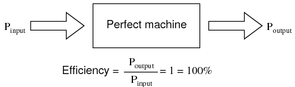
La potencia de salida de una máquina puede acercarse, pero nunca exceder, la potencia de entrada para una eficiencia del 100% como límite superior.
Por lo general, las máquinas ni siquiera logran cumplir este límite, perdiendo parte de su energía de entrada en forma de calor que se irradia al espacio circundante y, por lo tanto, no forma parte del flujo de energía de salida. (Cifra below)
{kind=link}
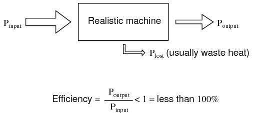
Una máquina realista suele perder parte de su energía de entrada en forma de calor al transformarla en el flujo de energía de salida.
Mucha gente ha intentado, sin éxito, diseñar y construir máquinas que produzcan más energía de la que absorben.movimiento perpetuoLa máquina demostraría que la Ley de Conservación de la Energía no era una Ley después de todo, pero marcaría el comienzo de una revolución tecnológica como el mundo nunca ha visto, ya que podría alimentarse a sí misma en un bucle circular y generar un exceso de energía de forma "gratuita". (Cifra below)
{kind=link}
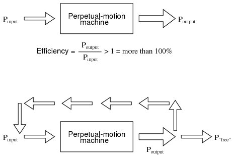
¿La hipotética “máquina de movimiento perpetuo” se alimenta a sí misma?
A pesar de muchos esfuerzos y muchas afirmaciones sin escrúpulos de “energía libre” osobreunidadmáquinas, ninguna ha superado jamás la sencilla prueba de alimentarse con su propia producción de energía y generar energía de sobra.
Sin embargo, existe una clase de máquinas conocidas comoamplificadores, que son capaces de captar señales de pequeña potencia y emitir señales de mucha mayor potencia. La clave para comprender cómo pueden existir los amplificadores sin violar la Ley de Conservación de la Energía radica en el comportamiento de los dispositivos activos.
Debido a que los dispositivos activos tienen la capacidad decontroluna gran cantidad de energía eléctrica con una pequeña cantidad de energía eléctrica, se pueden disponer en un circuito para duplicar la forma de la señal de entrada de una mayor cantidad de energía suministrada por una fuente de energía externa. El resultado es un dispositivo que parece magnificar mágicamente la potencia de una pequeña señal eléctrica (normalmente una forma de onda de voltaje CA) hasta convertirla en una forma de onda de forma idéntica y de mayor magnitud. La Ley de Conservación de la Energía no se viola porque la energía adicional es suministrada por una fuente externa, generalmente una batería de CC o equivalente. El amplificador no crea ni destruye energía, sino que simplemente la transforma en la forma de onda deseada, como se muestra en la Figura below.
{kind=link}
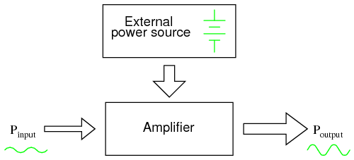
Si bien un amplificador puede escalar una pequeña señal de entrada a una salida grande, su fuente de energía es una fuente de alimentación externa.
En otras palabras, el comportamiento de control de corriente de los dispositivos activos se emplea paraformaLa energía CC de la fuente de alimentación externa adopta la misma forma de onda que la señal de entrada, lo que produce una señal de salida de forma similar pero con una magnitud de potencia diferente (mayor). El transistor u otro dispositivo activo dentro de un amplificador simplemente forma una mayorCopiarde la forma de onda de la señal de entrada a partir de la energía CC “bruta” proporcionada por una batería u otra fuente de energía.
Los amplificadores, como todas las máquinas, tienen una eficiencia limitada a un máximo del 100 por ciento. Normalmente, los amplificadores electrónicos son mucho menos eficientes y disipan cantidades considerables de energía en forma de calor residual. Debido a que la eficiencia de un amplificador es siempre del 100 por ciento o menos, nunca se puede hacer que funcione como un dispositivo de “movimiento perpetuo”.
El requisito de una fuente de alimentación externa es común a todos los tipos de amplificadores, eléctricos y no eléctricos. Un ejemplo común de un sistema de amplificación no eléctrico sería la dirección asistida de un automóvil, que amplifica la potencia de los brazos del conductor al girar el volante para mover las ruedas delanteras del automóvil. La fuente de energía necesaria para la amplificación proviene del motor. El dispositivo activo que controla la “señal de entrada” del conductor es una válvula hidráulica que transporta la energía del fluido desde una bomba conectada al motor a un pistón hidráulico que asiste el movimiento de las ruedas. Si el motor deja de funcionar, el sistema de amplificación no logra amplificar la potencia del brazo del conductor y resulta muy difícil girar el automóvil.
Amplifier gain
Debido a que los amplificadores tienen la capacidad de aumentar la magnitud de una señal de entrada, es útil poder calificar la capacidad de amplificación de un amplificador en términos de una relación salida/entrada. El término técnico para la relación de magnitud de salida/entrada de un amplificador esganar. Como relación de unidades iguales (salida/entrada de energía, salida de voltaje/entrada de voltaje, o salida de corriente/entrada de corriente), la ganancia es, naturalmente, una medida sin unidades. Matemáticamente, la ganancia está simbolizada por la letra mayúscula "A".
Por ejemplo, si un amplificador recibe una señal de voltaje de CA que mide 2 voltios RMS y emite un voltaje de CA de 30 voltios RMS, tiene una ganancia de voltaje de CA de 30 dividido por 2, o 15:
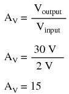
En consecuencia, si conocemos la ganancia de un amplificador y la magnitud de la señal de entrada, podemos calcular la magnitud de la salida. Por ejemplo, si a un amplificador con una ganancia de corriente CA de 3,5 se le da una señal de entrada CA de 28 mA RMS, la salida será 3,5 veces 28 mA, o 98 mA:
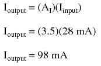
En los dos últimos ejemplos identifiqué específicamente las ganancias y las magnitudes de la señal en términos de "CA". Esto fue intencional e ilustra un concepto importante: los amplificadores electrónicos a menudo responden de manera diferente a las señales de entrada de CA y CC, y pueden amplificarlas en diferentes grados. Otra forma de decir esto es que los amplificadores suelen amplificarcambios or variacionesen la magnitud de la señal de entrada (CA) en una proporción diferente a laestableMagnitudes de la señal de entrada (DC). Las razones específicas de esto son demasiado complejas para explicarlas en este momento, pero vale la pena mencionar el hecho. Si se van a realizar cálculos de ganancia, primero se debe entender qué tipo de señales y ganancias se están tratando, CA o CC.
Las ganancias de los amplificadores eléctricos se pueden expresar en términos de voltaje, corriente y/o potencia, tanto en CA como en CC. Un resumen de las definiciones de ganancia es el siguiente. El símbolo “delta” en forma de triángulo (Δ) representacambiaren matemáticas, entonces “ΔVproducción/ ΔVaporte" significa "cambio en el voltaje de salida dividido por el cambio en el voltaje de entrada" o, más simplemente, "voltaje de salida de CA dividido por el voltaje de entrada de CA":
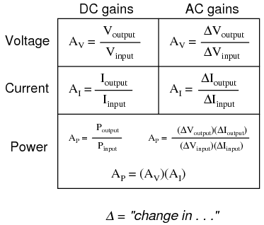
Si se colocan varios amplificadores, sus respectivas ganancias forman una ganancia general igual al producto (multiplicación) de las ganancias individuales. (Cifra below) Si se aplicara una señal de 1 V a la entrada de la ganancia del 3 amplificador en la Figura belowuna señal de 3 V procedente del primer amplificador se amplificaría aún más con una ganancia de 5 en la segunda etapa, lo que produciría 15 V en la salida final.
{kind=link}
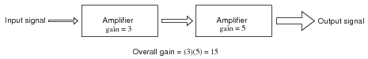
La ganancia de una cadena de amplificadores en cascada es el producto de las ganancias individuales.
Decibelios
En su forma más simple, el amplificadorganares una relación entre la producción y la entrada. Como todas las razones, esta forma de ganancia no tiene unidades. Sin embargo, existe una unidad real destinada a representar la ganancia y se llamabel.
Como unidad, el bel en realidad fue ideado como una forma conveniente de representar el poder.pérdidaen el cableado del sistema telefónico en lugar deganaren amplificadores. El nombre de la unidad deriva de Alexander Graham Bell, el famoso inventor escocés cuyo trabajo fue fundamental en el desarrollo de sistemas telefónicos. Originalmente, la bel representaba la cantidad de pérdida de potencia de la señal debido a la resistencia sobre una longitud estándar de cable eléctrico. Ahora, se define en términos del logaritmo común (base 10) de una relación de potencia (potencia de salida dividida por la potencia de entrada):
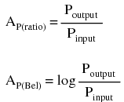
Como el bel es una unidad logarítmica, no es lineal. Para darle una idea de cómo funciona esto, considere la siguiente tabla de cifras, comparando las pérdidas y ganancias de energía en belios con proporciones simples:
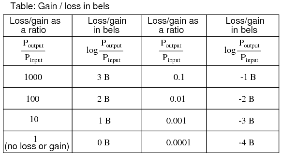
Más tarde se decidió que el bel era una unidad demasiado grande para usarse directamente, por lo que se hizo habitual aplicar el prefijo métricodeci(es decir, 1/10), haciéndolodecibelios o dB. Ahora bien, la expresión "dB" es tan común que muchas personas no se dan cuenta de que es una combinación de "deci-" y "-bel", o que incluso existe una unidad como el "bel". Para poner esto en perspectiva, aquí hay otra tabla que compara las relaciones de ganancia/pérdida de potencia con los decibelios:
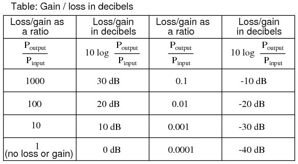
Como unidad logarítmica, este modo de expresión de ganancia de potencia cubre una amplia gama de proporciones con una extensión mínima de cifras. Es razonable preguntarse: “¿por qué alguien sintió la necesidad de inventar unalogarítmico¿Unidad para pérdida de potencia de señal eléctrica en un sistema telefónico?” La respuesta está relacionada con la dinámica de la audición humana, cuya intensidad perceptiva es de naturaleza logarítmica.
La audición humana es altamente no lineal: para duplicar la intensidad percibida de un sonido, la potencia sonora real debe multiplicarse por un factor de diez. Relacionar la pérdida de potencia de la señal telefónica en términos de la escala logarítmica “bel” tiene mucho sentido en este contexto: una pérdida de potencia de 1 bel se traduce en una pérdida de sonido percibida del 50 por ciento, o 1/2. Una ganancia de potencia de 1 belio se traduce en una duplicación de la intensidad percibida del sonido.
Una analogía casi perfecta con la escala de Bel es la escala de Richter utilizada para describir la intensidad de un terremoto: un terremoto de 6,0 Richter es 10 veces más potente que un terremoto de 5,0 Richter; un terremoto de 7,0 Richter 100 veces más potente que un terremoto de 5,0 Richter; un terremoto de 4,0 Richter es 1/10 tan potente como un terremoto de 5,0 Richter, y así sucesivamente. La escala de medición del pH químico también es logarítmica; una diferencia de 1 en la escala equivale a una diferencia diez veces mayor en la concentración de iones de hidrógeno de una solución química. Una ventaja de utilizar una escala de medición logarítmica es el tremendo rango de expresión que ofrece un intervalo relativamente pequeño de valores numéricos, y es esta ventaja la que asegura el uso de los números de Richter para terremotos y el pH para la actividad de los iones de hidrógeno.
Otra razón para la adopción del bel como unidad de ganancia es la simple expresión de las ganancias y pérdidas del sistema. Considere el último ejemplo del sistema (Figura above) donde se conectaron dos amplificadores en tándem para amplificar una señal. La ganancia respectiva de cada amplificador se expresó como una relación, y la ganancia general del sistema fue el producto (multiplicación) de esas dos relaciones:
Overall gain = (3)(5) = 15
Si estas cifras representaranfuerzaganancias, podríamos aplicar directamente la unidad de belios a la tarea de representar la ganancia de cada amplificador, y del sistema en su conjunto. (Cifra below)
{kind=link}
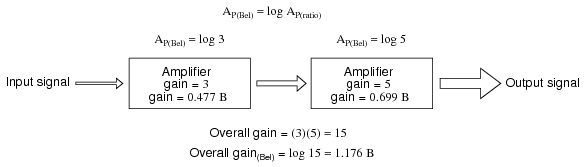
La ganancia de potencia en belios es aditiva: 0,477 B + 0,699 B = 1,176 B.
Una inspección minuciosa de estas cifras de ganancia en la unidad de “bel” arroja un descubrimiento: son aditivas. Las cifras de ganancia de relación son multiplicativas para amplificadores por etapas, pero las ganancias se expresan en belios.adden vez demultiplicarpara igualar la ganancia general del sistema. El primer amplificador con una ganancia de potencia de 0,477 B se suma a la ganancia de potencia del segundo amplificador de 0,699 B para crear un sistema con una ganancia de potencia total de 1,176 B.
Al volver a calcular los decibelios en lugar de los belios, notamos el mismo fenómeno. (Cifra below)
{kind=link}
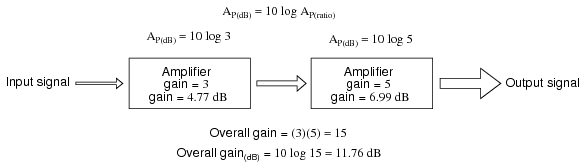
La ganancia de las etapas del amplificador en decibeles es aditiva: 4,77 dB + 6,99 dB = 11,76 dB.
Para quienes ya están familiarizados con las propiedades aritméticas de los logaritmos, esto no sorprende. Es una regla elemental del álgebra que el antilogaritmo de la suma de los valores del logaritmo de dos números es igual al producto de los dos números originales. En otras palabras, si tomamos dos números y determinamos el logaritmo de cada uno, luego sumamos esas dos cifras de logaritmo, luego determinamos el “antilogaritmo” de esa suma (elevamos el número base del logaritmo, en este caso, 10, a la potencia de esa suma), el resultado será el mismo que si simplemente hubiéramos multiplicado los dos números originales. Esta regla algebraica forma el corazón de un dispositivo llamadoregla de cálculo, una computadora analógica que podría, entre otras cosas, determinar los productos y cocientes de números mediante la suma (sumando longitudes físicas marcadas en balanzas deslizantes de madera, metal o plástico). Dada una tabla de cifras de logaritmos, el mismo truco matemático podría usarse para realizar multiplicaciones y divisiones que de otro modo serían complejas, teniendo solo que hacer sumas y restas, respectivamente. Con la llegada de las calculadoras digitales portátiles de alta velocidad, esta elegante técnica de cálculo prácticamente desapareció del uso popular. Sin embargo, sigue siendo importante comprender cuándo se trabaja con escalas de medición que son de naturaleza logarítmica, como las escalas bel (decibelios) y Richter.
Al convertir una ganancia de potencia de unidades de belios o decibelios a una relación sin unidades, se utiliza la función matemática inversa de los logaritmos comunes: potencias de 10, o laantilogaritmo.
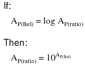
Convertir decibeles en proporciones sin unidades para la ganancia de potencia es muy parecido, sólo se incluye un factor de división de 10 en el término del exponente:
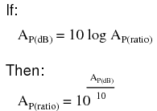
Ejemplo:La potencia que entra a un amplificador es de 1 vatio y la potencia de salida es de 10 vatios. Encuentre la ganancia de potencia en dB.AP(dB)= 10 registro10(PO/ PAGI) = 10 registro10(10/1) = 10 registro10(10) = 10 (1) = 10dBEjemplo:Encuentre la relación de ganancia de potencia AP(ratio)= (PO/ PAGI) para una ganancia de potencia de 20 dB.
AP(dB)= 20 = 10 registro10 AP(ratio)
20/10 = log10 AP(ratio)
1020/10= 10log10 (AP(ratio))
100 = AP(ratio)= (PO / PI)
Debido a que el bel es fundamentalmente una unidad defuerzaLa ganancia o pérdida en un sistema, las ganancias y pérdidas de voltaje o corriente no se convierten a belios o dB de la misma manera. Cuando usamos belios o decibelios para expresar una ganancia distinta de la potencia, ya sea voltaje o corriente, debemos realizar el cálculo en términos de cuánta ganancia de potencia habría para esa cantidad de voltaje o ganancia de corriente. Para una impedancia de carga constante, una ganancia de voltaje o corriente de 2 equivale a una ganancia de potencia de 4 (22); una ganancia de voltaje o corriente de 3 equivale a una ganancia de potencia de 9 (32). Si multiplicamos el voltaje o la corriente por un factor dado, entonces la ganancia de potencia incurrida por esa multiplicación será el cuadrado de ese factor. Esto se relaciona con las formas de la Ley de Joule donde la potencia se calculaba a partir del voltaje o la corriente y la resistencia:
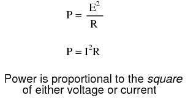
Por lo tanto, al traducir una ganancia de voltaje o corrienterelaciónen una ganancia respectiva en términos de la unidad bel, debemos incluir este exponente en la(s) ecuación(s):
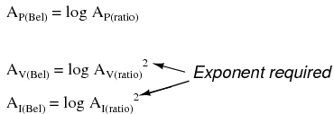
El mismo requisito de exponente se aplica al expresar ganancias de voltaje o corriente en términos de decibeles:
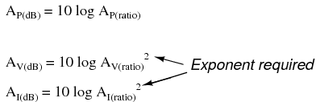
Sin embargo, gracias a otra propiedad interesante de los logaritmos, podemos simplificar estas ecuaciones para eliminar el exponente incluyendo el “2” comofactor multiplicadorpara la función logaritmo. En otras palabras, en lugar de tomar el logaritmo de lacuadradode la ganancia de voltaje o corriente, simplemente multiplicamos el logaritmo de la ganancia de voltaje o corriente por 2 y el resultado final en belios o decibeles será el mismo:
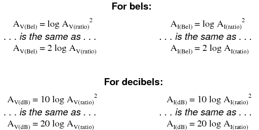
El proceso de convertir ganancias de voltaje o corriente de belios o decibeles a proporciones sin unidades es muy similar al de las ganancias de potencia:
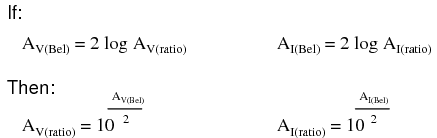
Aquí están las ecuaciones utilizadas para convertir ganancias de voltaje o corriente en decibeles en proporciones sin unidades:
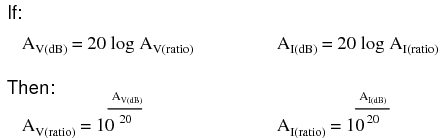
Si bien el bel es una unidad escalada naturalmente para potencia, se ha inventado otra unidad logarítmica para expresar directamente las ganancias/pérdidas de voltaje o corriente, y se basa en elnaturallogaritmo en lugar decomúnlogaritmo como lo son los belios y los decibelios. llamado elneper, su símbolo de unidad es “Np; sin embargo, es posible que se encuentre una “n” minúscula.
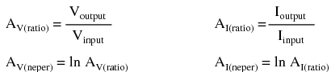
Para bien o para mal, ni el neper ni su primo atenuado, eldescifrador, se utiliza popularmente como unidad en aplicaciones de ingeniería estadounidenses.
Ejemplo:El voltaje en un amplificador de línea de audio de 600 Ω es de 10 mV, el voltaje en una carga de 600 Ω es de 1 V. Encuentre la ganancia de potencia en dB.
A(dB)= 20 registro10(VO/VI) = 20 registro10(1/0,01) = 20 registro10(100) = 20 (2) = 40dB
Ejemplo:Encuentre la relación de ganancia de voltaje AV(ratio)= (VO/VI) para un amplificador de ganancia de 20 dB con una impedancia de entrada y salida de 50 Ω.
AV(dB)= 20 registro10 AV(ratio)
20 = 20 log10 AV(ratio)
20/20 = log10 AP(ratio)
1020/20= 10log10 (AV(ratio))
10 = AV(ratio)= (VO / VI)
- REVISAR:
- Las ganancias y pérdidas pueden expresarse en términos de una relación sin unidades, o en la unidad de belios (B) o decibelios (dB). Un decibelio es literalmente undeci-bel: una décima parte de un bel.
- El bel es fundamentalmente una unidad de expresión.fuerzaganancia o pérdida. Para convertir una relación de potencia a belios o decibelios, utilice una de estas ecuaciones:
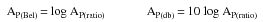
- Cuando se utiliza la unidad de belio o decibelio para expresar unaVoltaje or actualrelación, debe expresarse en términos de un equivalentefuerzarelación. En la práctica, esto significa el uso de diferentes ecuaciones, con un factor de multiplicación de 2 para el valor del logaritmo correspondiente a un exponente de 2 para la relación de ganancia de tensión o corriente:
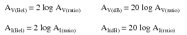
- Para convertir una ganancia de decibeles en una ganancia de relación sin unidades, utilice una de estas ecuaciones:
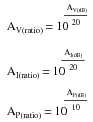
- Una ganancia (amplificación) se expresa como un belio o decibelio positivo. Una pérdida (atenuación) se expresa como una cifra negativa en belios o decibeles. La ganancia unitaria (sin ganancia ni pérdida; relación = 1) se expresa como cero belios o cero decibeles.
- Al calcular la ganancia general para un sistema amplificador compuesto por múltiples etapas de amplificador, las relaciones de ganancia individuales sonmultiplicadopara encontrar la relación de ganancia general. Por otra parte, las cifras de belios o decibeles para cada etapa del amplificador sonagregadojuntos para determinar la ganancia general.
Absolute dB scales
También es posible utilizar el decibelio como unidad de potencia absoluta, además de utilizarlo como expresión de ganancia o pérdida de potencia. Un ejemplo común de esto es el uso de decibelios como medida de la intensidad de la presión sonora. En casos como estos, la medición se realiza en referencia a algún nivel de potencia estandarizado definido como 0 dB. Para las mediciones de presión sonora, 0 dB se define vagamente como el umbral inferior de la audición humana, cuantificado objetivamente como 1 picovatio de potencia sonora por metro cuadrado de área.
Un sonido que mide 40 dB en la escala de decibeles sería 104veces mayor que el umbral de audición. Un sonido de 100 dB sería 1010(diez mil millones) de veces mayor que el umbral de audición.
Debido a que el oído humano no es igualmente sensible a todas las frecuencias del sonido, se han desarrollado variaciones de la escala de potencia sonora en decibelios para representar intensidades de sonido fisiológicamente equivalentes en diferentes frecuencias. Algunos instrumentos de intensidad de sonido estaban equipados con redes de filtros para dar indicaciones desproporcionadas en toda la escala de frecuencia, con el fin de representar mejor los efectos del sonido en el cuerpo humano. Tres escalas filtradas se conocieron comúnmente como escalas ponderadas “A”, “B” y “C”. Las indicaciones de intensidad del sonido en decibelios medidas a través de estas respectivas redes de filtrado se dieron en unidades de dBA, dBB y dBC. Hoy en día, la “escala ponderada A” se utiliza más comúnmente para expresar el impacto fisiológico equivalente en el cuerpo humano y es especialmente útil para calificar fuentes de ruido peligrosamente fuertes.
Se ha establecido otro sistema estándar de medición de potencia en la unidad de decibeles para su uso en sistemas de telecomunicaciones. Esto se llama eldBmescala. (Cifra below) El punto de referencia, 0 dBm, se define como 1 milivatio de potencia eléctrica disipada por una carga de 600 Ω. Según esta escala, 10 dBm equivalen a 10 veces la potencia de referencia, o 10 milivatios; 20 dBm equivalen a 100 veces la potencia de referencia, o 100 milivatios. Algunos voltímetros de CA vienen equipados con un rango o escala de dBm (a veces denominado "DB") destinado a medir la potencia de la señal de CA a través de una carga de 600 Ω. 0 dBm en esta escala está, por supuesto, elevado por encima de cero porque representa algo mayor que 0 (en realidad, representa 0,7746 voltios en una carga de 600 Ω, siendo el voltaje igual a la raíz cuadrada de la potencia multiplicada por la resistencia; la raíz cuadrada de 0,001 multiplicada por 600). Cuando se ve en el frente del movimiento de un medidor analógico, esta escala de dBm aparece comprimida en el lado izquierdo y expandida en el derecho de una manera similar a una escala de resistencia, debido a su naturaleza logarítmica.
{kind=link}
Las mediciones de potencia de radiofrecuencia para señales de bajo nivel encontradas en receptores de radio utilizan mediciones de dBm referidas a una carga de 50 Ω. Los generadores de señales para la evaluación de receptores de radio pueden emitir una señal nominal ajustable en dBm. El nivel de la señal se selecciona mediante un dispositivo llamado atenuador, que se describe en la siguiente sección.
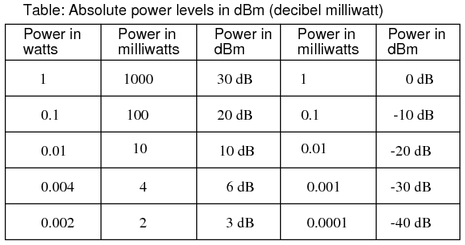
Niveles de potencia absolutos en dBm (decibelios referidos a 1 milivatio).
Una adaptación de la escala dBm para la intensidad de la señal de audio se utiliza en la grabación de estudio y en la ingeniería de transmisión para estandarizar los niveles de volumen, y se llama escalaVUescala. Los vúmetros se ven con frecuencia en instrumentos de grabación electrónicos para indicar si la señal grabada excede o no el límite máximo de nivel de señal del dispositivo, donde se producirá una distorsión significativa. Esta escala de “indicador de volumen” está calibrada de acuerdo con la escala dBm, pero no indica directamente dBm para ninguna señal que no sean tonos de onda sinusoidal constante. La unidad de medida adecuada para un vúmetro esunidades de volumen.
Cuando se trata de señales relativamente grandes, y una escala absoluta de dB sería útil para representar el nivel de la señal, a veces se utilizan escalas de decibeles especializadas con puntos de referencia mayores que 1 mW utilizado en dBm. Tal es el caso de ladBWescala, con un punto de referencia de 0 dBW establecido en 1 Watt. Otra medida absoluta de poder llamadadBkla escala hace referencia a 0 dBk a 1 kW o 1000 vatios.
- REVISAR:
- La unidad de belio o decibelio también se puede utilizar para representar una medida absoluta de potencia en lugar de solo una ganancia o pérdida relativa. Para las mediciones de potencia sonora, 0 dB se define como un punto de referencia estandarizado de potencia igual a 1 picovatio por metro cuadrado. Otra escala de dB adecuada para mediciones de intensidad de sonido está normalizada a los mismos efectos fisiológicos que un tono de 1000 Hz y se llamadBAescala. En este sistema, 0 dBA se define como cualquier sonido de frecuencia que tenga la misma equivalencia fisiológica que un tono de 1 picovatio por metro cuadrado a 1000 Hz.
- Se ha creado una escala eléctrica de dB con un punto de referencia absoluto para su uso en sistemas de telecomunicaciones. llamado eldBmescala, su punto de referencia de 0 dBm se define como 1 milivatio de potencia de señal de CA disipada por una carga de 600 Ω.
- A VUEl medidor lee el nivel de la señal de audio según los dBm para señales de onda sinusoidal. Debido a que su respuesta a señales distintas a las ondas sinusoidales estables no es la misma que la del dBm verdadero, su unidad de medida esunidades de volumen.
- Se han inventado escalas de dB con puntos de referencia absolutos mayores que la escala de dBm para señales de alta potencia. EldBWLa escala tiene su punto de referencia de 0 dBW definido como 1 vatio de potencia. EldBkLa báscula fija 1 kW (1000 Watts) como referencia del punto cero.
Attenuators
Los atenuadores son dispositivos pasivos. Conviene comentarlos junto con los decibeles. Los atenuadores se debilitan oatenuarla salida de alto nivel de un generador de señal, por ejemplo, para proporcionar una señal de nivel más bajo para algo como la entrada de antena de un receptor de radio sensible. (Cifra below) El atenuador podría estar integrado en el generador de señal o ser un dispositivo independiente. Podría proporcionar una cantidad de atenuación fija o ajustable. Una sección de atenuador también puede proporcionar aislamiento entre una fuente y una carga problemática.
{kind=link}
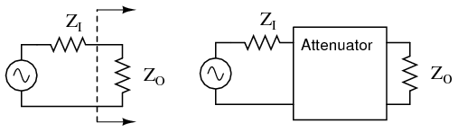
El atenuador de impedancia constante se adapta a la impedancia de la fuente ZIy la impedancia de carga ZO. Para equipos de radiofrecuencia Z es 50 Ω.
En el caso de un atenuador independiente, se debe colocar en serie entre la fuente de señal y la carga abriendo la ruta de la señal como se muestra en la Figura above. Además, debe coincidir tanto con la impedancia de la fuenteZIy la impedancia de cargaZO, al tiempo que proporciona una cantidad específica de atenuación. En esta sección solo consideraremos el caso especial y más común donde las impedancias de fuente y carga son iguales. No consideradas en esta sección, las impedancias desiguales de fuente y carga pueden igualarse mediante una sección de atenuador. Sin embargo, la formulación es más compleja.
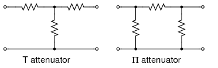
Los atenuadores de sección T y sección Π son formas comunes.
Las configuraciones comunes son lasT and Πredes mostradas en la figura above Se pueden conectar en cascada múltiples secciones de atenuador cuando se necesitan señales aún más débiles, como se muestra en la Figura below.
{kind=link}
{kind=link}
Decibelios
Las relaciones de voltaje, tal como se utilizan en el diseño de atenuadores, a menudo se expresan en términos de decibeles. La relación de voltaje (K a continuación) debe derivarse de la atenuación en decibeles. Las relaciones de potencia expresadas en decibelios son aditivas. Por ejemplo, un atenuador de 10 dB seguido de un atenuador de 6 dB proporciona 16 dB de atenuación general.
10 dB + 6 db = 16 dB
Los cambios en los niveles de sonido son perceptibles aproximadamente proporcionales al logaritmo de la relación de potencia (PI / PO).
nivel de sonido = registro10(PI / PO)
Un cambio de 1 dB en el nivel de sonido es apenas perceptible para el oyente, mientras que un cambio de 2 dB es fácilmente perceptible. Una atenuación de 3 dB corresponde a reducir la potencia a la mitad, mientras que una ganancia de 3 db corresponde a duplicar el nivel de potencia. Una ganancia de -3 dB equivale a una atenuación de +3 dB, correspondiente a la mitad del nivel de potencia original.
El cambio de potencia en decibeles en términos de relación de potencia es:dB = 10 log10(PI / PO)Suponiendo que la carga RIen PIes igual que la resistencia de carga ROen PO (RI = RO), los decibeles pueden derivarse de la relación de voltaje (VI/VO) o ratio circulante (II / IO):
PO = V O IO = VO2/ R = yoO2 R
PI = V I II = VI2/ R = yoI2 R
dB = 10 log10(PI/ PAGO) = 10 registro10(VI2 / VO2) = 20 registro10(VI/VO)
dB = 10 log10(PI/ PAGO) = 10 registro10(II2 / IO2) = 20 registro10(II/IO)
Las dos formas más utilizadas de la ecuación de decibelios son:
dB = 10 log10(PI/ PAGO) o dB = 20 log10(VI/VO)
Usaremos la última forma, ya que necesitamos la relación de voltaje. Una vez más, la forma de ecuación de relación de voltaje solo es aplicable cuando las dos resistencias correspondientes son iguales. Es decir, la resistencia de la fuente y la carga deben ser iguales.
Ejemplo:La potencia de entrada a un atenuador es de 10 vatios y la potencia de salida es de 1 vatio. Encuentre la atenuación en dB.
dB = 10 log10(PI/ PAGO) = 10 registro10(10/1) = 10 registro10(10) = 10 (1) = 10dB
Ejemplo:Encuentre la relación de atenuación de voltaje (K= (VI/VO)) para un atenuador de 10 dB.
dB = 10= 20 log10(VI/VO)
10/20 = log10(VI/VO)
1010/20= 10log10(VI / VO)
3.16 = (VI / VO) = UnP(ratio)
Ejemplo:La potencia que entra a un atenuador es de 100 milivatios y la potencia de salida es de 1 milivatio. Encuentre la atenuación en dB.
dB = 10 log10(PI / PO) = 10 registro10(100/1) = 10 registro10(100) = 10 (2) = 20dB
Ejemplo:Encuentre la relación de atenuación de voltaje (K= (VI / VO)) para un atenuador de 20 dB.
dB = 20= 20 log10(VI / VO )
1020/20= 10 log10(VI / VO )
10 = (VI / VO) = k
Atenuador en T
Los atenuadores T y Π deben conectarse a unZfuente yZImpedancia de carga. ElZ-(las flechas) que apuntan en dirección opuesta al atenuador en la siguiente figura indican esto. ElZ-(flechas) que apuntan hacia el atenuador indican que la impedancia vista mirando hacia el atenuador con una carga Z en el extremo opuesto es Z, Z=50 Ω para nuestro caso. Esta impedancia es constante (50 Ω) con respecto a la atenuación; la impedancia no cambia cuando se cambia la atenuación.
La tabla en la figura belowenumera los valores de resistencia para elT and Πatenuadores para adaptarse a una fuente/carga de 50 Ω, como es el requisito habitual en el trabajo de radiofrecuencia.
{kind=link}
Los servicios telefónicos y otros trabajos de audio a menudo requieren una adaptación a 600 Ω. multiplicar todoRvalores según la relación (600/50) para corregir la coincidencia de 600 Ω. Multiplicar por 75/50 convertiría los valores de la tabla para que coincidan con una fuente y carga de 75 Ω.
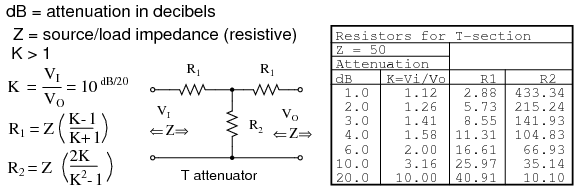
Fórmulas para resistencias atenuadoras de sección en T, dada K, la relación de atenuación de voltaje y ZI = ZO= 50 Ω.
La cantidad de atenuación suele especificarse en dB (decibelios). Sin embargo, necesitamos la relación de voltaje (o corriente)Kpara encontrar los valores de resistencia a partir de ecuaciones. Ver eldB/20término en poder de10término para calcular la relación de voltajeKdesde dB, arriba.
The T(y debajoΠ) las configuraciones se utilizan con mayor frecuencia ya que proporcionan coincidencia bidireccional. Es decir, la entrada y salida del atenuador se pueden intercambiar de un extremo a otro y aún así coincidir con las impedancias de fuente y carga mientras se proporciona la misma atenuación.
Desconectando la fuente y mirando hacia la derecha enVI, necesitamos ver una combinación en serie paralela deR1, R2, R1, yZpareciendo una resistencia equivalente aZIN, igual que la impedancia de fuente/carga Z: (una carga de Z está conectada a la salida).
ZIN = R1+ (R2||(R1+Z))
Por ejemplo, sustituya los valores de 10 dB de la tabla de atenuadores de 50 Ω porR1 and R2como se muestra en la figura below.
{kind=link}
ZIN= 25,97 + (35,14 ||(25,97 + 50))
ZIN= 25,97 + (35,14 || 75,97 )
ZIN= 25,97 + 24,03 = 50
Esto nos muestra que vemos 50 Ω mirando directamente al atenuador de ejemplo (Figura below) con una carga de 50 Ω.
Reemplazo del generador fuente, desconectando la carga.Z at VO, y mirando hacia la izquierda, debería darnos la misma ecuación que la anterior para la impedancia enVO, debido a la simetría. Además, las tres resistencias deben tener valores que suministren la atenuación requerida de entrada a salida. Esto se logra mediante las ecuaciones paraR1 and R2arriba como se aplica a laT-atenuador abajo.
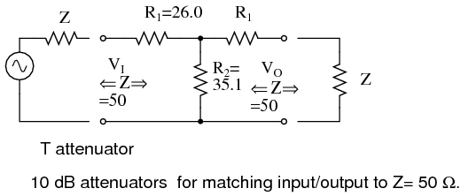
10 dB T-section attenuator for insertion between a 50 Ω source and load.
Atenuador en PI
La tabla en la figura belowenumera los valores de resistencia para elΠatenuador que coincide con una fuente/carga de 50 Ω en algunos niveles de atenuación comunes. Las resistencias correspondientes a otros niveles de atenuación pueden calcularse a partir de las ecuaciones.
{kind=link}
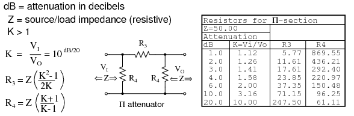
Fórmulas para resistencias atenuadoras de sección Π, dada K, la relación de atenuación de voltaje y ZI = ZO= 50 Ω.
Lo anterior se aplica al atenuador π siguiente.
¿Qué valores de resistencia se requerirían tanto para elΠ¿Atenuadores para 10 dB de atenuación que coincidan con una fuente y carga de 50 Ω?
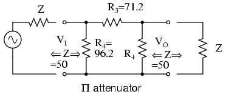
10 dB Π-section attenuator example for matching a 50 Ω source and load.
The 10 dBcorresponde a una relación de atenuación de tensión deK=3.16en la penúltima línea de la tabla anterior. Transfiera los valores de resistencia en esa línea a las resistencias en el diagrama esquemático de la Figura above.
{kind=link}
Atenuador en L
La tabla en la figura belowenumera los valores de resistencia para elLatenuadores para que coincidan con una fuente/carga de 50 Ω.La tabla en la figura belowenumera los valores de resistencia para una forma alternativa. Tenga en cuenta que los valores de resistencia no son los mismos.
{kind=link}
{kind=link}
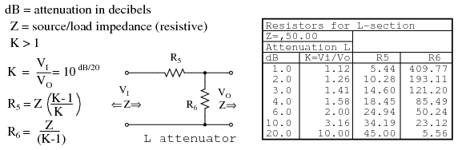
Mesa de atenuadores de sección en L para fuente de 50 Ω e impedancia de carga.
Lo anterior se aplica a laLatenuador a continuación.
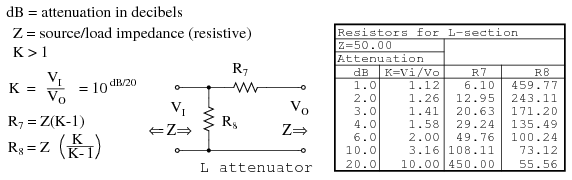
Tabla de atenuadores de sección en L de forma alternativa para fuente de 50 Ω e impedancia de carga.
Atenuador T con puente
La tabla en la figura belowenumera los valores de resistencia para el puenteTatenuadores para que coincidan con una fuente y carga de 50 Ω. El atenuador en T puenteado no se utiliza con frecuencia. ¿Por qué no?
{kind=link}
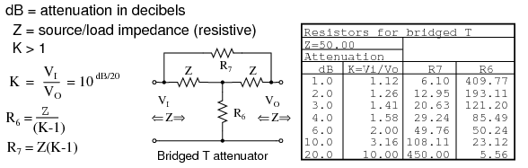
Fórmulas y tabla abreviada para la sección de atenuador en T puenteada, Z = 50 Ω.
Cascaded sections
Las secciones del atenuador se pueden conectar en cascada como en la Figura belowpara obtener más atenuación de la que puede estar disponible en una sola sección. Por ejemplo, se pueden conectar en cascada dos atenuadores de 10 dB para proporcionar 20 dB de atenuación, siendo los valores de dB aditivos. La relación de atenuación de voltaje.K or VI/VOpara una sección de atenuador de 10 dB es 3,16. La relación de atenuación de voltaje para las dos secciones en cascada es el producto de los dosKs o 3,16x3,16=10 para las dos secciones en cascada.
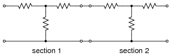
Secciones de atenuador en cascada: la atenuación en dB es aditiva.
Se puede proporcionar atenuación variable en pasos discretos mediante un atenuador conmutado. La figura de ejemplo below, que se muestra en la posición de 0 dB, es capaz de atenuar de 0 a 7 dB mediante conmutación aditiva de ninguna, una o más secciones.
{kind=link}
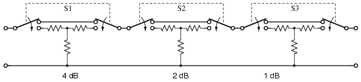
Atenuador conmutado: la atenuación es variable en pasos discretos.
El atenuador típico de múltiples secciones tiene más secciones de las que muestra la figura anterior. La adición de una sección de 3 u 8 dB arriba permite que la unidad cubra hasta 10 dB y más. Los niveles de señal más bajos se logran añadiendo secciones de 10 dB y 20 dB, o una sección binaria múltiple de 16 dB.
RF attenuators
Para trabajos de radiofrecuencia (RF) (<1000 Mhz), las secciones individuales deben montarse en compartimentos blindados para impedir el acoplamiento capacitivo si se desean alcanzar niveles de señal más bajos en las frecuencias más altas. Las secciones individuales de los atenuadores conmutados de la sección anterior están montadas en secciones blindadas. Se pueden tomar medidas adicionales para ampliar el rango de frecuencia más allá de 1000 Mhz. Se trata de una construcción a partir de elementos resistivos sin plomo de formas especiales.
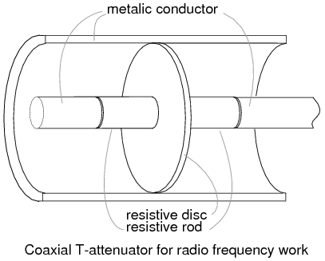
Atenuador en T coaxial para trabajos por radiofrecuencia.
En la figura se muestra un atenuador de sección en T coaxial que consta de varillas resistivas y un disco resistivo. above. Esta construcción se puede utilizar hasta unos pocos gigahercios.La versión coaxial Π tendría una varilla resistiva entre dos discos resistivos en la línea coaxial como en la Figura below.
{kind=link}
{kind=link}
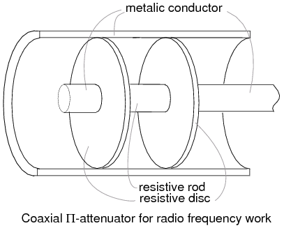
Atenuador Π coaxial para trabajos de radiofrecuencia.
Los conectores de RF, que no se muestran, están conectados a los extremos de los atenuadores T y Π anteriores. Los conectores permiten conectar en cascada atenuadores individuales, además de conectarse entre una fuente y una carga. Por ejemplo, se puede colocar un atenuador de 10 dB entre una fuente de señal problemática y una entrada costosa del analizador de espectro. Aunque es posible que no necesitemos la atenuación, el costoso equipo de prueba está protegido de la fuente atenuando cualquier sobretensión.
Resumen: atenuadores- An atenuadorreduce una señal de entrada a un nivel más bajo.
- La cantidad de atenuación se especifica endecibeles(dB). Los valores de decibelios son aditivos para las secciones de atenuador en cascada.
- dB de la relación de potencia: dB = 10 log10(PI/ PAGO)
- dB de la relación de voltaje: dB = 20 log10(VI/VO)
- T and ΠLos atenuadores de sección son las configuraciones de circuito más comunes.
Colaboradores
Los contribuyentes a este capítulo se enumeran en orden cronológico de sus contribuciones, desde el más reciente hasta el primero. Consulte el Apéndice 2 (Lista de colaboradores) para fechas e información de contacto.
Colin Barnard(Noviembre de 2003): Corrección respecto al país de origen de Alexander Graham Bell (Escocia, no Estados Unidos).
Lecciones en circuitos eléctricoscopyright (C) 2000-2023 Tony R. Kuphaldt, según los términos y condiciones delCC BY License.